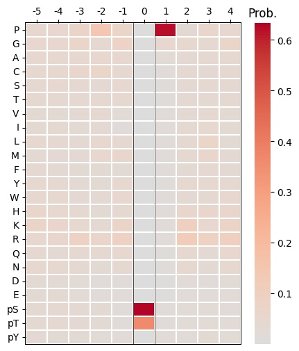
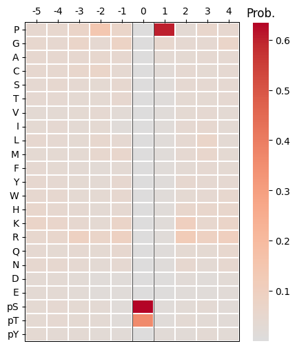
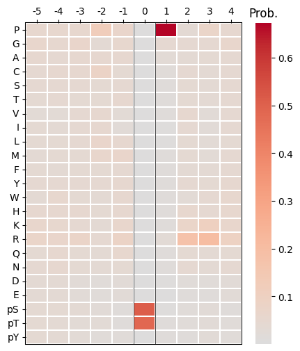
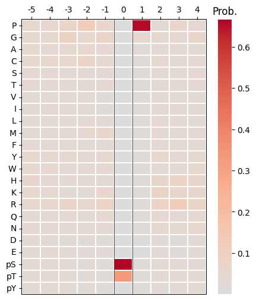

import pandas as pd
from katlas.train import *
from katlas.dnn import *
from fastai.vision.all import *
from katlas.pssm import *Predict
pspa_unk = pd.read_parquet('raw/kd_similar_pspa.parquet')
pspa_unk = pspa_unk[pspa_unk.within_threshold].copy()len(pspa_unk)1230# from katlas.data import *
# kd = Data.get_kd_uniprot()t5 = pd.read_parquet('raw/t5_kd.parquet')test_pspa = t5.loc[pspa_unk.index].reset_index()Predict
sample=pd.read_parquet('train/pspa_t5.parquet')target_col = sample.columns[~sample.columns.str.startswith('T5')]target_colIndex(['-5P', '-4P', '-3P', '-2P', '-1P', '0P', '1P', '2P', '3P', '4P',
...
'-5pY', '-4pY', '-3pY', '-2pY', '-1pY', '0pY', '1pY', '2pY', '3pY',
'4pY'],
dtype='object', length=230)feat_col = test_pspa.columns[1:]feat_colIndex(['T5_0', 'T5_1', 'T5_2', 'T5_3', 'T5_4', 'T5_5', 'T5_6', 'T5_7', 'T5_8',
'T5_9',
...
'T5_1014', 'T5_1015', 'T5_1016', 'T5_1017', 'T5_1018', 'T5_1019',
'T5_1020', 'T5_1021', 'T5_1022', 'T5_1023'],
dtype='object', length=1024)n_feature = len(feat_col)
n_target = len(target_col)n_feature,n_target(1024, 230)def get_cnn(): return PSSM_model(n_feature,n_target,model='CNN')from tqdm import tqdmdef get_ensemble_pred(test_df, model_name,nfold=5):
ensemble = None
for i in tqdm(range(nfold)):
test_pred = predict_dl(test_df,
feat_col,
target_col,
model_func=get_cnn, # model architecture
model_pth=f'{model_name}_fold{i}', # only name, not with .pth
)
if ensemble is None:
ensemble = test_pred.copy() # start with first prediction
else:
ensemble += test_pred # accumulate
ensemble /= 5
return ensemblepred = get_ensemble_pred(test_pspa,'cnn_pspa')100%|████████████████████████████████████████████████████████████████████████████████████████████████| 5/5 [00:05<00:00, 1.16s/it]pred.index=pspa_unk.indexpred.to_parquet('raw/pred_new_pspa.parquet')pred| -5P | -4P | -3P | -2P | -1P | 0P | 1P | 2P | 3P | 4P | ... | -5pY | -4pY | -3pY | -2pY | -1pY | 0pY | 1pY | 2pY | 3pY | 4pY | |
|---|---|---|---|---|---|---|---|---|---|---|---|---|---|---|---|---|---|---|---|---|---|
| A0A8I3S724_AURKA_CANLF_KD1 | 0.037882 | 0.043779 | 0.047041 | 0.015380 | 0.041898 | 0.000035 | 0.014323 | 0.038704 | 0.043827 | 0.049526 | ... | 0.044010 | 0.040576 | 0.037645 | 0.013764 | 0.059714 | 3.364276e-06 | 0.038454 | 0.043046 | 0.061429 | 0.046730 |
| A0A8I5ZNK2_OXSR1_RAT_KD1 | 0.049239 | 0.043381 | 0.043311 | 0.028526 | 0.024280 | 0.000017 | 0.015904 | 0.036569 | 0.055815 | 0.055253 | ... | 0.056746 | 0.050559 | 0.046230 | 0.048480 | 0.063029 | 1.908836e-06 | 0.024791 | 0.022593 | 0.038125 | 0.032603 |
| A0JM20_TYRO3_XENTR_KD1 | 0.051376 | 0.052102 | 0.052074 | 0.052638 | 0.039458 | 0.000007 | 0.014260 | 0.036449 | 0.041221 | 0.043479 | ... | 0.047453 | 0.048676 | 0.052394 | 0.046324 | 0.091800 | 9.998582e-01 | 0.070185 | 0.070169 | 0.022106 | 0.042790 |
| A0JNB0_FYN_BOVIN_KD1 | 0.046870 | 0.045461 | 0.040785 | 0.051638 | 0.031777 | 0.000042 | 0.014092 | 0.031362 | 0.044332 | 0.045642 | ... | 0.053741 | 0.067277 | 0.067271 | 0.058158 | 0.079825 | 9.992056e-01 | 0.115731 | 0.104918 | 0.031915 | 0.042396 |
| A0M8R7_MET_PAPAN_KD1 | 0.050430 | 0.051898 | 0.046124 | 0.052797 | 0.030787 | 0.000008 | 0.012470 | 0.035201 | 0.051783 | 0.045867 | ... | 0.055322 | 0.063184 | 0.067201 | 0.055751 | 0.128271 | 9.998606e-01 | 0.096431 | 0.081910 | 0.025833 | 0.041041 |
| ... | ... | ... | ... | ... | ... | ... | ... | ... | ... | ... | ... | ... | ... | ... | ... | ... | ... | ... | ... | ... | ... |
| Q9Z2R9_E2AK1_MOUSE_KD1 | 0.034602 | 0.038246 | 0.029201 | 0.018279 | 0.023267 | 0.000089 | 0.006634 | 0.026299 | 0.060636 | 0.040961 | ... | 0.036762 | 0.033087 | 0.052582 | 0.034784 | 0.052302 | 4.450690e-07 | 0.022007 | 0.019414 | 0.033284 | 0.040663 |
| Q9Z2W1_STK25_MOUSE_KD1 | 0.045502 | 0.040996 | 0.040295 | 0.032663 | 0.030100 | 0.000020 | 0.017534 | 0.042085 | 0.043391 | 0.050217 | ... | 0.042046 | 0.036751 | 0.047517 | 0.044899 | 0.036057 | 3.428805e-06 | 0.019266 | 0.016506 | 0.029094 | 0.024208 |
| Q9Z335_SBK1_RAT_KD1 | 0.040285 | 0.027252 | 0.026376 | 0.035437 | 0.108038 | 0.000049 | 0.061123 | 0.050412 | 0.066567 | 0.059834 | ... | 0.026251 | 0.025690 | 0.013364 | 0.027668 | 0.028979 | 1.546801e-06 | 0.043730 | 0.041582 | 0.060285 | 0.045016 |
| W0LYS5_CAMKI_MACNP_KD1 | 0.049159 | 0.035515 | 0.025772 | 0.020806 | 0.057251 | 0.000065 | 0.014600 | 0.028858 | 0.027823 | 0.049323 | ... | 0.028890 | 0.024585 | 0.017603 | 0.015780 | 0.031326 | 4.352188e-06 | 0.035301 | 0.101816 | 0.042666 | 0.032528 |
| X5M5N0_WNK_CAEEL_KD1 | 0.038345 | 0.037591 | 0.039816 | 0.043162 | 0.025581 | 0.000033 | 0.016244 | 0.033651 | 0.038988 | 0.045358 | ... | 0.037754 | 0.033027 | 0.036153 | 0.035582 | 0.047813 | 1.219898e-05 | 0.028811 | 0.033507 | 0.038083 | 0.036475 |
1230 rows × 230 columns
test
cdks = pspa_unk[pspa_unk.closest_pos_index.str.contains('CDK')]for i in cdks.head(5).index:
plot_heatmap(recover_pssm(pred.loc[i]))
plt.show()
plt.close()



